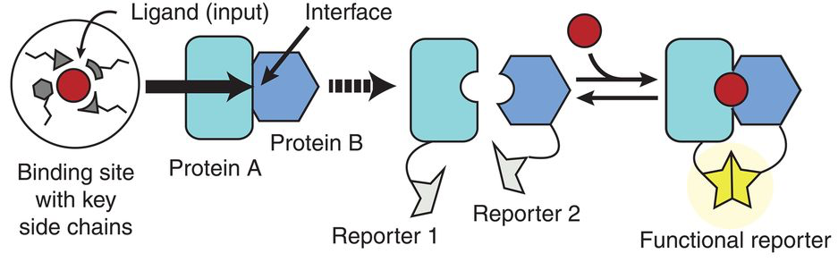
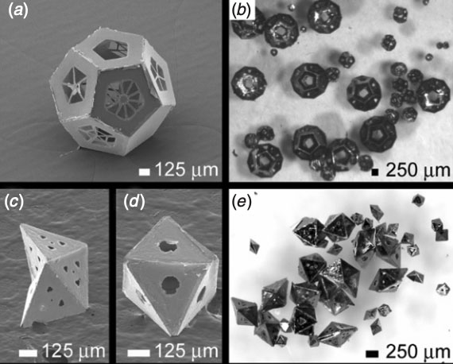

Publications¶
{kind=link}
Susanna K. Elledge*, Xin X. Zhou*, James R. Byrnes, Alexander J. Martinko, Irene Lui, Katarina Pance, Shion A. Lim, Jeff E. Glasgow, Anum A. Glasgow, Keirstinne Turcios, Nikita S. Iyer, Leonel Torres, Michael J. Peluso, Timothy J. Henrich, Taia T. Wang, Cristina M. Tato, Kevin K. Leung, Bryan Greenhouse, and James A. Wells. Engineering luminescent biosensors for point-of-care SARS-CoV-2 antibody detection. Nature Biotechnology, 39(8):928–935, August 2021. doi:10.1038/s41587-021-00878-8.
Anum Glasgow\*, Jeff Glasgow\*, Daniel Limonta, Paige Solomon, Irene Lui, Yang Zhang, Matthew A. Nix, Nicholas J. Rettko, Shoshana Zha, Rachel Yamin, Kevin Kao, Oren S. Rosenberg, Jeffrey V. Ravetch, Arun P. Wiita, Kevin K. Leung, Shion A. Lim, Xin X. Zhou, Tom C. Hobman, Tanja Kortemme, and James A. Wells. Engineered ACE2 receptor traps potently neutralize SARS-CoV-2. *Proceedings of the National Academy of Sciences*, 117(45):28046–28055, November 2020. doi:10.1073/pnas.2016093117. {kind=link}
Anum A. Glasgow*, Yao-Ming Huang*, Daniel J. Mandell*, Michael Thompson, Ryan Ritterson, Amanda L. Loshbaugh, Jenna Pellegrino, Cody Krivacic, Roland A. Pache, Kyle A. Barlow, Noah Ollikainen, Deborah Jeon, Mark J. S. Kelly, James S. Fraser, and Tanja Kortemme. Computational design of a modular protein sense/response system. Science, 366(6468):1024–1028, November 2019. doi:10.1126/science.aax8780.
Anum Azam Glasgow and Danielle Tullman-Ercek. Type III Secretion Filaments as Templates for Metallic Nanostructure Synthesis. Methods in Molecular Biology, 1798:155–171, 2018. doi:10.1007/978-1-4939-7893-9_12.
{kind=link}
Anum Azam Glasgow, Han Teng Wong, and Danielle Tullman-Ercek. A Secretion-Amplification Role for Salmonella enterica Translocon Protein SipD. ACS Synthetic Biology, 6(6):1006–1015, June 2017. doi:10.1021/acssynbio.6b00335.
 Anum Azam and Danielle Tullman-Ercek. Type-III secretion filaments as scaffolds for inorganic nanostructures. *Journal of the Royal Society Interface*, 13(114):20150938, January 2016. doi:10.1098/rsif.2015.0938.
Anum Azam and Danielle Tullman-Ercek. Type-III secretion filaments as scaffolds for inorganic nanostructures. *Journal of the Royal Society Interface*, 13(114):20150938, January 2016. doi:10.1098/rsif.2015.0938.
Anum Azam, Cheng Li, Kevin J. Metcalf, and Danielle Tullman-Ercek. Type III secretion as a generalizable strategy for the production of full-length biopolymer-forming proteins. Biotechnology and Bioengineering, 113(11):2313–2320, November 2016. doi:10.1002/bit.25656.
Kevin J. Metcalf, Casey Finnerty, Anum Azam, Elias Valdivia, and Danielle Tullman-Ercek. Using Transcriptional Control To Increase Titers of Secreted Heterologous Proteins by the Type III Secretion System. Applied and Environmental Microbiology, 80(19):5927–5934, October 2014. doi:10.1128/AEM.01330-14.
{kind=link}
Anum Azam, Kate E. Laflin, Mustapha Jamal, Rohan Fernandes, and David H. Gracias. Self-folding micropatterned polymeric containers. Biomedical Microdevices, 13(1):51–58, February 2011. doi:10.1007/s10544-010-9470-x.
Jeong-Hyun Cho, Anum Azam, and David H. Gracias. Three Dimensional Nanofabrication Using Surface Forces. *Langmuir*, 26(21):16534–16539, November 2010. doi:10.1021/la1013889. {kind=link}
David J. Filipiak*, Anum Azam*, Timothy G. Leong, and David H. Gracias. Hierarchical self-assembly of complex polyhedral microcontainers. Journal of Micromechanics and Microengineering, 19(7):075012, June 2009. doi:10.1088/0960-1317/19/7/075012.
Anum Azam, Timothy G. Leong, Aasiyeh M. Zarafshar, and David H. Gracias. Compactness Determines the Success of Cube and Octahedron Self-Assembly. PLOS ONE, 4(2):e4451, February 2009. doi:10.1371/journal.pone.0004451.